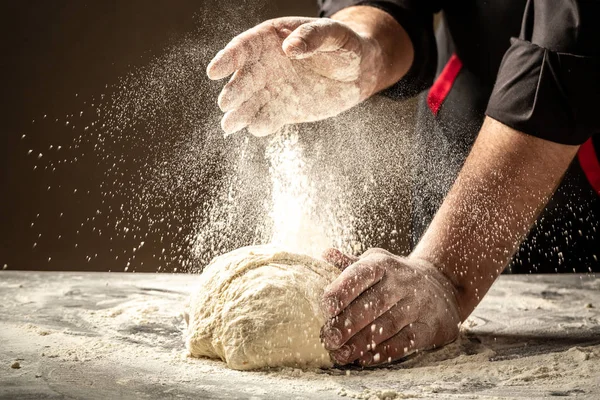

BELLA NAPÓLI · PIZZERÍA ARTESANAL
Pizza artesanal
con alma italiana
Ingredientes frescos, recetas inspiradas en la tradición y el mejor sabor en cada porción.
Ingredientes frescos
Horno artesanal
Recetas tradicionales
Hecha con pasión

DESDE NUESTRA COCINA
El sabor de siempre, como en Nápoli
En Bella Napóli creemos que una buena pizza comienza con ingredientes de calidad, una masa preparada con paciencia y mucho amor por lo que hacemos.
Conoce más →